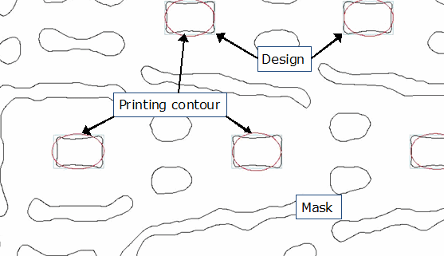

The Correct job
corrects the printing and EPE distribution. It reduces PV bands
and brings contours closer to design targets. After Correct runs,
there may still be line end pullback, but there are no catastrophic
failures.
The
contract for this job is
For all process window conditions within
the verification box of Figure 2 of “Checking Initial Results,” extra
printing has been almost completely eliminated.
Printing shapes are on target within
8% of CD.
Figure 1 shows typical output. Notice how compared
to Figure 1 of “Fixing Decorate Job Problems” there are
far fewer printing contours.
Figure 1. Typical Output of Correct Job
Procedure
- To see the “job 3 correct”
output, add a setlayer pxopc command with “LASTJOB 3” to your
file. Using the layer names from “Example 2”, the command looks
as follows:
setlayer px.Correct = pxopc target trgtsmth MAP target \
OPTIONS SIMULATION_OPTIONS LASTJOB 3
- Add a rule check in the SVRF
file to copy the output to the results:
correct_output {
RET PXOPC target trgtsmth FILE "pxopc.in" MAP px.Correct }
DRC CHECK MAP correct_output 23
Note: Do not
forget to remove the lines for extra output when you are ready to
use the SVRF and pxOPC setup files for production runs.
- Determine if there is a problem.
It is expected that there is some line-end pullback, and that contours
may be as much as 8% of CD away from the target. Unless the difference is
excessive, the contract is still met. Additionally, it is expected
that there might be occasional SRAFs printing.
- To improve main feature contours,
try the following techniques:
If EPE is too large, or some
features are not opened in all process conditions
Verify that the selected
process window conditions include nominal, inner, and outer.
If the process window
conditions used an aerial resist model, try a CM1 model.
Increase iterations by two.
If contours ripple excessively
To improve image slope, adjust constraint.
If you do not have the constraint command in the
job, add “constraint ils greater val”,
where val is the target ILS, and “outer_iterations 5”.
If the constraint command is already in the recipe,
try adding the “initial_weight w”
option. The default w is
0.01.
If ILS is still insufficient, change constraint
to “constraint ils maximize initial_weight w”.
The “maximize” setting should only be used with set_on_target and
suppress_extra_printing.
- If the adjustments were not
sufficient, adjust the process window condition. The process window
conditions set in pw_condition should be somewhat more aggressive
than the conditions set in the verification file.
- Re-run Calibre pxOPC and check
the output by running print image on the layer created by the Correct
job. If the image meets the contract but the final output still
needs improvement, proceed to “Fixing Refine Job Problems”.
Results
The output from the Correct job shows
a contour-like mask and the printing is almost entirely main features,
which match acceptably with the design layer.